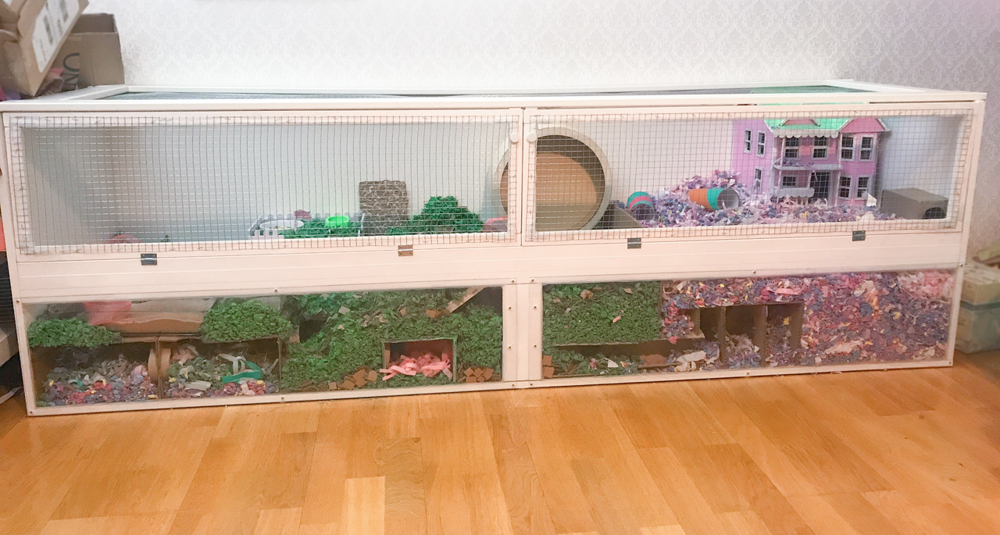

Billig wirkt klein.
Je niedriger der Kaufpreis, desto leichter unterschätzen Menschen die Verpflichtung.
Der Vergleich muss ehrlich sein: Wie leben Tiere oft, und was wäre aus Sicht des Tieres wirklich vertretbar?

Viele Haustiere leben in Haltungen, die gesellschaftlich normal aussehen: Hamsterkäfig im Kinderzimmer, Kaninchenstall im Garten, einzelner Vogel im Käfig, Hund mit Garten, Katze ohne Beschäftigung. Das wirkt vertraut. Genau das macht es gefährlich. Vertraut heißt nicht gut.
Vertretbare Haltung fragt nicht: „Was ist gerade noch erlaubt?“ Sie fragt: „Was braucht dieses Tier, damit sein Alltag nicht nur überlebt, sondern tragbar ist?“ Diese Frage ist unbequemer, aber ehrlicher.
| Tier | Typische Realhaltung | Wirklich vertretbarer Maßstab |
|---|---|---|
| Hamster | kleiner Käfig, Kinderzimmer, tagsüber geweckt | großes strukturiertes Gehege, tiefe Einstreu, Ruhe am Tag, kein Kuscheltieranspruch |
| Kaninchen | Stall oder kleiner Auslauf, oft allein oder zu zweit ohne echte Fläche | Gruppen-/Paarhaltung, dauerhaft viel Fläche, Buddeln, Verstecke, Wetterschutz und tierärztliche Zahnkontrolle |
| Wellensittiche | Käfig, manchmal Einzelhaltung, Küche/Wohnzimmerluft | Schwarm oder mindestens Paar, Freiflug, UV-Licht, saubere Luft ohne Rauch, Duftstoffe und Küchendämpfe |
| Hund | lange allein, Garten als Ausgleich, Wochenend-Auslastung | tägliche Beziehung, Betreuung, Bewegung, Training, Sozialkontakt und Notfallbudget |
Ein Tier kann billig sein. Seine Haltung ist es nicht. Ein Hamster für wenige Euro, ein geschenkter Käfig oder ein günstiger Welpe aus Kleinanzeigen setzen einen falschen Anker: Der Mensch denkt an den Startpreis, nicht an Jahre aus Futter, Einstreu, Einrichtung, Tierarzt, Medikamente, Urlaubslösung und Notfällen.
Je niedriger der Kaufpreis, desto leichter unterschätzen Menschen die Verpflichtung.
Ein Tier braucht Rücklagen. Hoffnung ist kein Budget.
Wenn diese Frage ernsthaft offen ist, war die Anschaffung nicht tragfähig.
Ein Tier ist kein Übungsobjekt. Kinder können füttern helfen, beobachten, lernen und mitfühlen. Aber sie können nicht die letzte Verantwortung tragen. Wenn ein Kind keine Lust mehr hat, krank ist, in die Pubertät kommt oder das Tier nicht so reagiert wie erhofft, bleibt das Tier trotzdem vollständig abhängig von den Erwachsenen.
„Du bist alt genug, dich allein um den Hamster zu kümmern“ klingt nach Pädagogik. Für das Tier kann es Vernachlässigung bedeuten. Verantwortung lernt ein Kind an erwachsenen Vorbildern, nicht daran, dass ein Lebewesen die Fehler eines Kindes ausbaden muss.
Wenn die wirklich vertretbare Haltung nicht machbar ist, ist Nichtanschaffen die tierfreundlichere Entscheidung.
Wa(h)re Haustier(liebe) ist ein privates Projekt – werbefrei, unabhängig und ehrenamtlich. Die laufenden Kosten für Hosting, Domain und Recherche tragen wir selbst. Wenn dir diese Seite geholfen hat, freuen wir uns über Unterstützung – für uns oder direkt für den Tierschutz:
Spenden an uns als Privatpersonen sind nicht steuerlich absetzbar. Die Streunerhilfe Plau e. V. ist ein eigenständiger gemeinnütziger Verein – dort ist deine Spende steuerlich absetzbar und fließt direkt in die Versorgung und Kastration von Streunerkatzen.